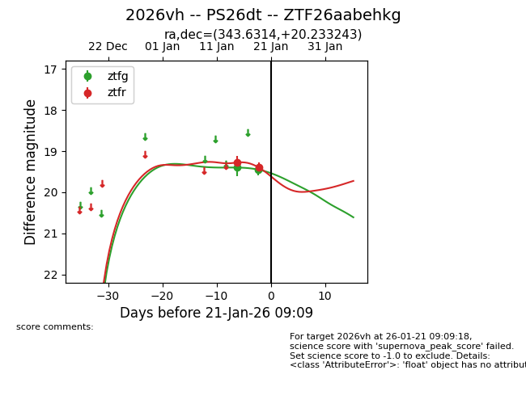
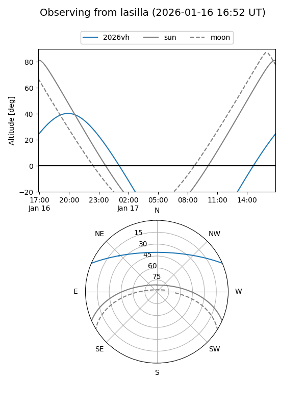
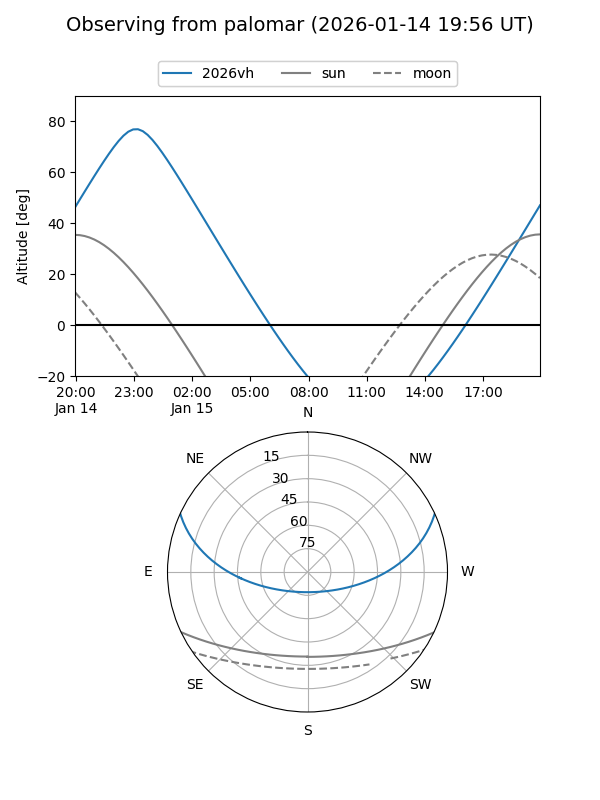
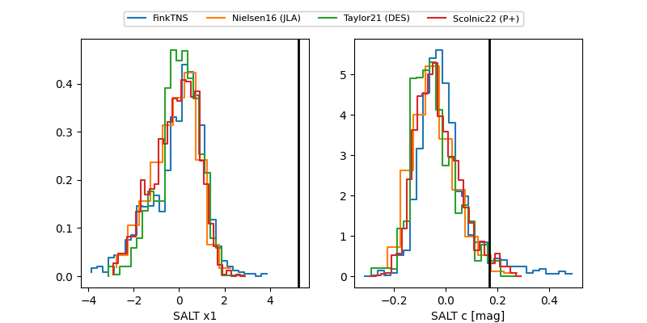

2026vh
Target 2026vh at 2026-01-21 09:11
Aliases and brokers:
FINK: link
Lasair: link
ALeRCE: link
TNS: link
YSE: link
alt names
ZTF26aabehkg (ztf,fink_ztf)
2026vh (tns,yse)
PS26dt (panstarrs)
Coordinates:
equatorial (ra, dec) = 343.6314,+20.23324
equatorial (HMS+DMS) = 22:54:31.55,+20:13:59.67
galactic (l, b) = (89.0071,-34.82363)
Flags:
Photometry:
last ztfg=19.45, ztfr=19.40
2 ztfg, 2 ztfr detections
Lightcurve

Visibility


Additional plots
